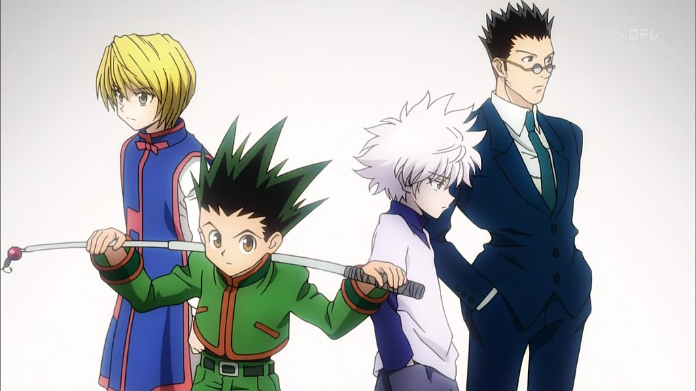

Hunter x Hunter
Rating: 10/10
Review:
Hunter x Hunter is an adventure shonen anime, about a young boy named Gon, on a journey to find his father Ging. Along the way Gon meets friends and encounters enemies along the way. Of these friends are Leorio, Kurapika and Killua. Killua, Gon’s best friend serves as a second protagonist in the show. Coming from a family of assassins he struggles with finding his purpose in life. He searches for his purpose while tagging along with Gon on his Quest. The Chimera Ant arc, in particular was especially remarkable. There were so many characters introduced but it never seemed like too much. Every character changed dramatically, especially our two main characters, Killua and Gon. Gon, a generally happy kid gets put into emotionally traumatic situation and we see an angry side of him we’ve never seen and just how much he’s willing to risk for his friends. Killua learns how to work as a team rather than alone. In this arc it’s illustrated how much Gon means to him. He battles with himself to change is selfish driven instincts installed in him by his family of assassins since he was born to help his friend save Kite. The way each character changes do to their experiences in this show is amazing and is why this is my favorite anime ever.